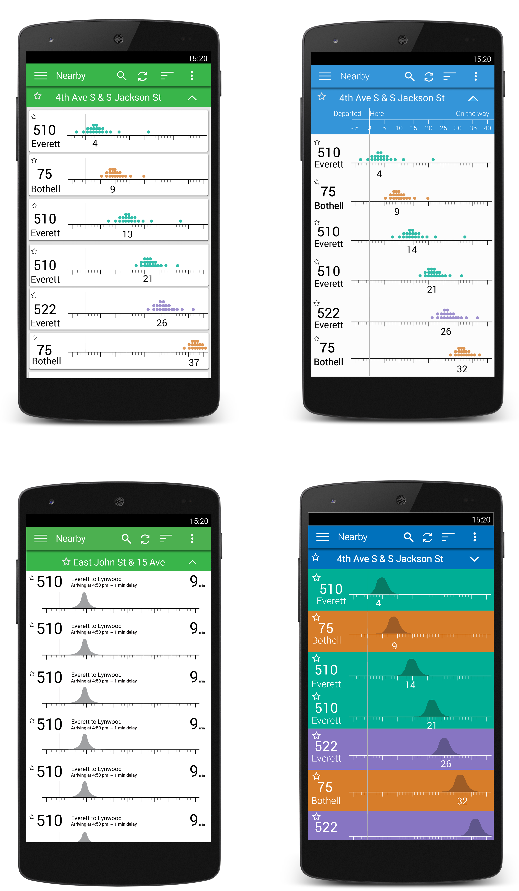
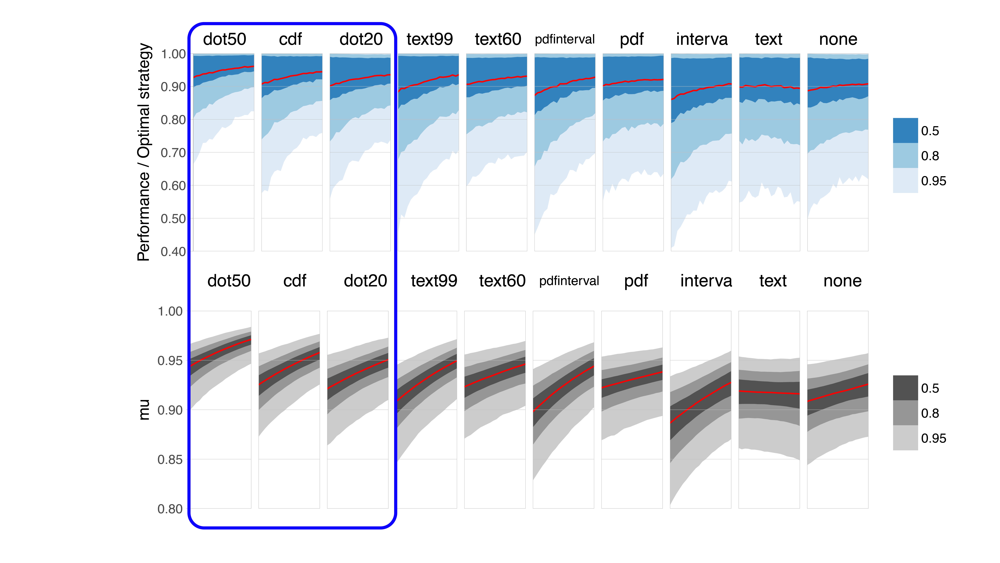

Uncertain Bus
Humans are odd. Just because we are given the correct information doesn't mean we know what to do with it but, I don't think this is our fault. Coming up with systems that allow humans to take the best action based off predictions made by machine intelligence will be more and more important as AI and machine learning because more important
I was very lucky to be able to collaborate with 3 faculty members and a jr. level data scientist to design a way that allows humans to make better decisions in a situation where uncertainity might muddy the prediction made by computers.
This project pushed me to become a better designer, research and collaborator while also highlighting areas where I need to improve as a uxer.
Overall from this project I gained valuable data driven design, HCI with artificial intelligence and data visualization. To get an idea of the research published to the ACM conference on Computer-Human Interaction visit here. The following discusses my role as a designer on the project.
Why buses?
To understand the how the concept of uncertainty comes into play with bus predictions take the following scenario and illustration.
Checking her phone, Sara leaves her house to catch a bus to a dinner event. An app on her phone tells her that the bus will come within the next 10minutes.
In one scenario, the bus comes late. It catches multiple redlights in a row, bus ridership is abnormally high or a frazzled passenger struggles to find the last quarter in their pocket.
In another scenario, the bus comes early. It catches multiple green lights, ridership was below normal or the bus driver drank two cups of coffee that morning.
In both scenarios, events outside of Sara's control affect her decision. Sara either spends extra time at a bus stop or misses the bus altogether.


Gathering the Requirements.
We used user research(published to CHI 2016) on how people felt about uncertainity in real time transit decisions to inform how to deisgn our displays.
In general my design worked followed the folllowing guidelines:
- Mantain the look and feel of current Trip Planning apps(OneBusAway was used as a reference).
- Mantain a glanacable interface that can be used to make in the moment decisions.
- From the previous user research, we know bus riders ask the questions: if I arrive at the bus stop at a certain time, how much of a chance do I still have of catching the bus? If I delay, how does that affect my chances of catching the bus?
As a team we spent much time deliberating what types of visualizations to include in my designs.
| No Uncertainty (Control) | The current most common form of communicating a prediction. |
|---|---|
| Textual Representations(Natural Language) | A very glanceable representation of uncertainty takes little effort other than reading one sentence. |
| Interval Plots (Box and Whisker) | Most common uncertainty visualization understood by many with limited stats background. |
| Probability Density Plots | Allows users to see the shape of a uncertainty visualization quickly and accurately. Prior exploratory research found this visualization to be the most visually aesthetic. |
| Dot Plots | A discrete version of discrete(discontinuous) that allows users to evaluate |
| Cumulative Distribution Plots | Prior work found bus riders ask, “how much of a chancedo I still have of catching the bus?”. CDFs uniquely allow for users to ask this question and have a simple response. |
| Probability Density Plots with Interval Shading | Allows for two different types of viewing of the data. A quick view similar to box and whiskers but also a more information rich view in the probability curve. |
The first of many mistakes...
I began my design process by making full mockups of what our visualizations could be. Although I still intended do iterations, my mistake here was thinking too big too fast.
Thinking Modularly

To match the information displayed in existing trip planning apps, I used the popular app OneBusAway as a reference. I began by breaking down the larger interface into smaller components, I knew the final design would include. These pieces became the building blocks that I fit together, like a puzzle, to find the correct layout.

From the pieces, I rapidly itterated layouts. I choose to use stand in information at this point in the design because the layout of information matters. In this context, what each informational piece means in the context of the larger interface determined the necessary form of the layout.
Connecting With Riders
To mimic the same look, feel and the information displayed on OneBusAway(OBA), I adapted the Uncertain Bus(UBUS) design to the visual language of OBA.

Putting Things Into Motion
In previous user research, bus riders voiced the need of making comparisons between multiple routes. To facilitate the comparison I implemented a motion design which shifts the each bus timeline to the right, centering each visualization within the interface as it rises to the top.

Findings from Usability Test
Usability tests I conducted found people could not make sense of some of the information inherited from the One Bus Away in the new context of the UBUS interface. In particular, annotations that informed the user on how late or early a bus may arrive confused participants. Participants had a hard time choosing to pay attention to the uncertainty representation or the late annotation. Since, in most cases, the late annotations doesn't give an actual indication of the likelihood of a bus coming early or late, as a team we choose to remove the annotations for testing purposes.
The Experiment
Our experiment asked participants to make decisions on when to leave for a bus. Participants were asked to make their decision using a randomily assigned version of our interface containg one of 10 different uncertainity representations. We used quantiative metrics collected throughout the experiment to determine how participants made decisions based off their assigned interface.
Analysis
The figure below fits learning curves to the decisions made by an "average participant" during our experiment. Our results show that not only do Dot-Plots provide for the most accurate and consistent decision making.
Final Design and Future Work

Our experiment shows that uncertainty displays can promote rational decision making however, more work must be done to see how users adapt to this type of interface in a real world situation.
To complete my role with the project, I completed designs based off the data collected from the experiment. I used the finding that Dot Plots allow for the best decision making around realtime transit data to create an interface that spatially accomodates for this particular design.
Dot plots
Interested more in dot plots? I made an open source contribution to D3.js with a version of the dotplot I made for this project. To showcase how designers can use dot plots, I also made a quick prototype of an app which communicates information in dot plots. Take a look at the blog post!